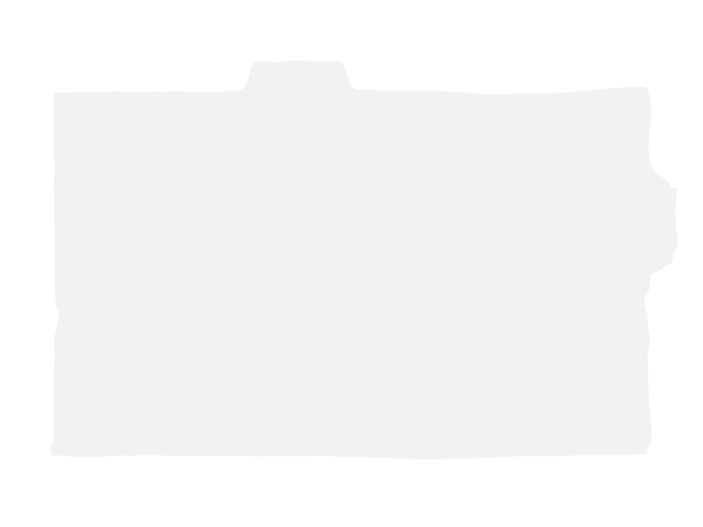
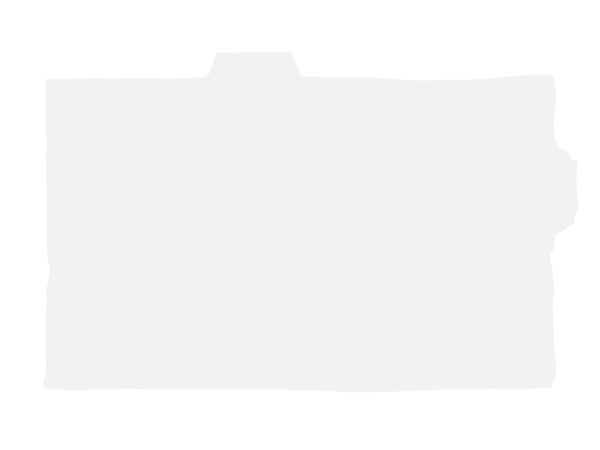

Homestay - Your Stay
The farm house is set amidst barley fields on the foot hills of Matho Kangri(snow capped tops). The house spans its view(looks into the expanse of the Indus valley from Matho Kangri through Leh, Khardongla pass towards Shey, Thikshey and Stakna, presenting a panorama of the Leh valley set by the banks of river Indus. Our four exclusive premium rooms on the first floor come with personal balconies - with all staying comforts - overlooking the Leh valley. A green house with a kitchen garden provides supplies with fresh and organic herbs, vegetables and fruits. Plenty of outdoor spaces on each floor and a personal balcony to each of the four exclusive rooms provides enough privacy to relive the mountain air. The farm house is set amidst barley fields on the foot hills of Matho Kangri(snow capped tops). The house spans its view(looks into the expanse of the Indus valley from Matho Kangri through Leh, Khardongla pass towards Shey, Thikshey and Stakna, presenting a panorama of the Leh valley set by the banks of river Indus. Our four exclusive premium rooms on the first floor come with personal balconies - with all staying comforts - overlooking the Leh valley. A green house with a kitchen garden provides supplies with fresh and organic herbs, vegetables and fruits. Plenty of outdoor spaces on each floor and a personal balcony to each of the four exclusive rooms provides enough privacy to relive the mountain air.
Homestay - Facilities
In-house facilities and point of engagement: 1. Library & AV room: 2. Kitchenette: 3. Outdoor common space (first floor): 4. Meditation / Chanting space: 5. Green house: 6. Open kitchen garden: 7. Garden lounge: 8. Bbq station 9. Parking: 10. Water channel: 11. Woods 12. Office unit: 13. Rooftop lounge: 14. Bird house:
Homestay - Edibles